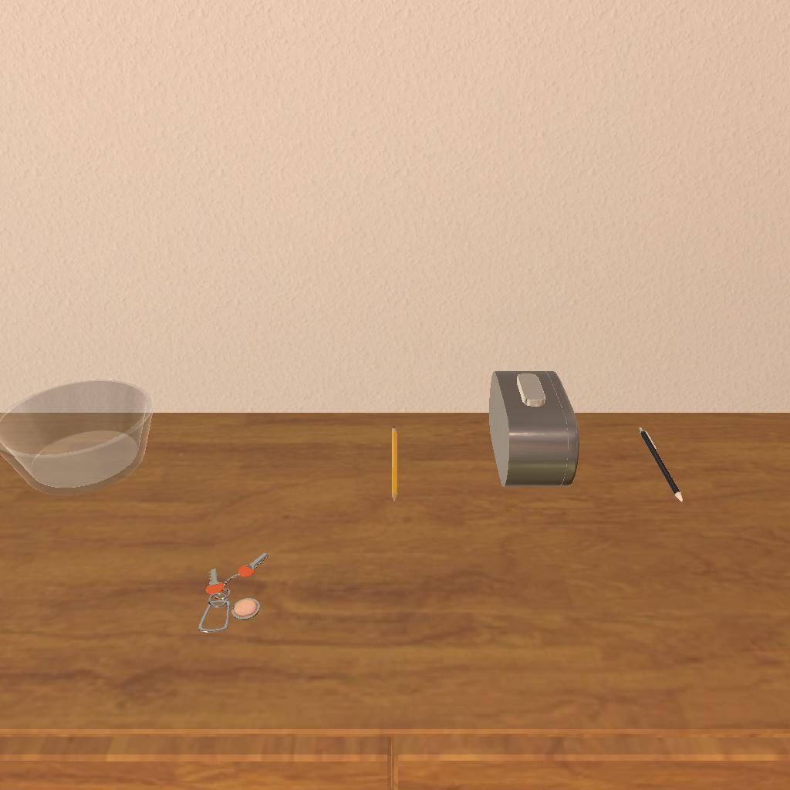

---------------------------------------------------------task: 0---------------------------------------------------------
--------------------------------------------------------------------------------------------------------------------------------------------------------------------
--------------------------------------------------------------------------------------------------------------------------------------------------------------------
Step:--------------------------------------------------------------------------10-------------------------------------------------------------------------------
----------------------------------------
VLM Prompt:
Image1:
Image2:
**Instruction**
1. Analyze the provided images to identify all visible household objects and compare the difference between images (e.h. whether the object is opened or not and taken on hand or not), focusing on those relevant to the task description "look at alarmclock under the desklamp."
2. Use the analysis of images and the task hint "The agent must find an object of the desired type, locate and turn on a light source with the desired object in-hand." to answer the question: what is the most reasonable action in the choices for the task description "look at alarmclock under the desklamp"?
3. Decide and write the answer using the template: The answer is: (i): , where i is the real number. If there is no desired object in images, search every place based on **Initial Observation** to find the object. And if no one is exactly correct, choose a similar answer.
**Initial Observation**
You are in the middle of a room. Looking quickly around you, you can see bed (1), sidetable (1), drawer (1-11), dresser (1), safe (1), laundryhamper (1), garbagecan (1)
**Answer Choices**
(1): go to bed 1
(2): go to drawer 2
(3): go to drawer 3
(4): go to drawer 4
(5): go to drawer 5
(6): go to drawer 6
(7): go to drawer 7
(8): go to drawer 8
(9): go to drawer 9
(10): go to drawer 10
(11): go to drawer 11
(12): go to safe 1
(13): go to laundryhamper 1
(14): go to garbagecan 1
(15): take bowl 1 from dresser 1
(16): take alarmclock 1 from dresser 1
(17): take keychain 1 from dresser 1
(18): take pen 1 from dresser 1
(19): take pencil 2 from dresser 1
(20): examine dresser 1
**Answer**
Let's think step by step by following the instructions.
----------------------------------------
----------------------------------------
Original Response:
First, we analyze the provided images. In Image 1, we can see a bed, a sidetable with a lamp on it, and a part of a wall with a picture hanging. In Image 2, we see a dresser with several objects on it: a bowl, a pencil, a tape dispenser, glasses, and an alarm clock.
Now, comparing the difference between images based on the task description "look at alarmclock under the desklamp," we can notice that the alarm clock is visible on the dresser in Image 2, and there's a lamp on the sidetable in Image 1 which could be the desklamp mentioned in the task.
Using the task hint, the agent must find an alarm clock, which is visible in Image 2 on the dresser, and then locate and turn on a light source with the alarm clock in hand. Since the lamp is on the sidetable in Image 1, the most reasonable action would be to take the alarm clock from the dresser and then go to the lamp to look at the alarm clock under the light.
Based on the answer choices, the correct action that aligns with the analysis is:
The answer is: (16): take alarmclock 1 from dresser 1.
----------------------------------------
----------------------------------------
>>> Refine Original VLM Response and Get Pure Action: take alarmclock 1 from dresser 1
----------------------------------------
-----------------------------------------------------------------
Running time: 14.126331329345703 seconds
Total Money: 0.29962
-----------------------------------------------------------------
-----------------------------------------------------------------
Text Observation:You pick up the alarmclock 1 from the dresser 1.
-----------------------------------------------------------------
UNSUCCEED